4月，春意盎然、鲜花绽放。在这个播种希望的季节、在即将迎来党的百年华诞之际，泰州市广播电视大学各市州电大（开大）分校隆重举行了2021年春季学期开学典礼。
德阳广播电视大学隆重举行2021年春季学期开学典礼
4月10日，德阳电大西湖校区洋溢着喜庆的气氛，校园内鲜花、气球、红毯和精美的小礼品带给新同学惊喜，德阳电大2021年春季学期开学典礼暨学位授予仪式在这里隆重举行。
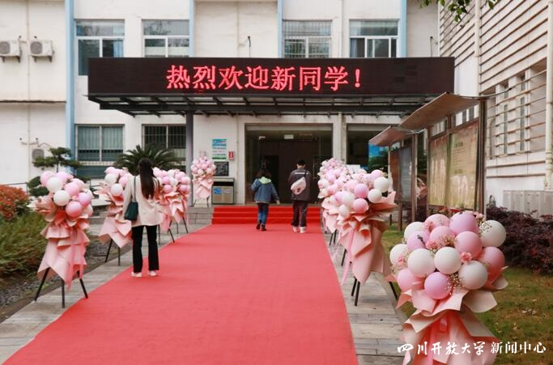
图1：校园内的布置
开学典礼上，全体师生首先聆听了泰州市广播电视大学党委副书记、校长杨俊辉的致辞。随后，范丽梅等13名本科毕业并获得学士学位的同学身着学位服，依次上台从德阳电大校长夏洪波手中接过学位证书并行拨穗礼，台下的全体新同学则报以热烈的祝贺掌声。
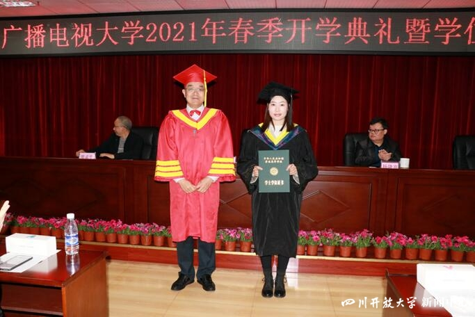
图2：颁发学位证书
夏洪波在典礼上向获得学位证书的同学表示祝贺，向新入学的全体同学表示热烈的欢迎，希望新同学以获得学位的同学为榜样，树立远大的人生目标，坚定奋斗不息的信念，谱写自己人生道路的新篇章。
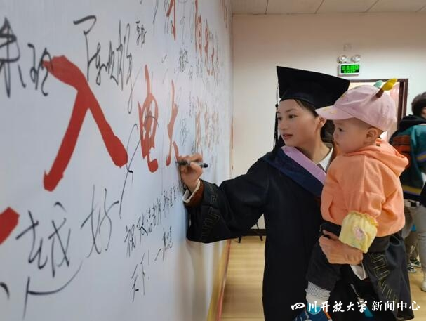
图3：学生带着孩子参加授位仪式
开学典礼和学位授予仪式结束后，全体学员在班主任的安排下进行了入学教育，学校领导杨隆高、廖星平及有关部门负责人，全体班主任老师参加了开学典礼。（德阳电大 刘志勇报道）
眉山广播电视大学举行2021年春季学期开学典礼
为进一步强化新学员学习成长的目标，激发学习进步的热情，明确学习和考试的要求， 4月10日，眉山电大在学校多功能报告厅隆重举行了2021年春季学期开学典礼。眉山电大教师和新生代表共计200余人参加了开学典礼。
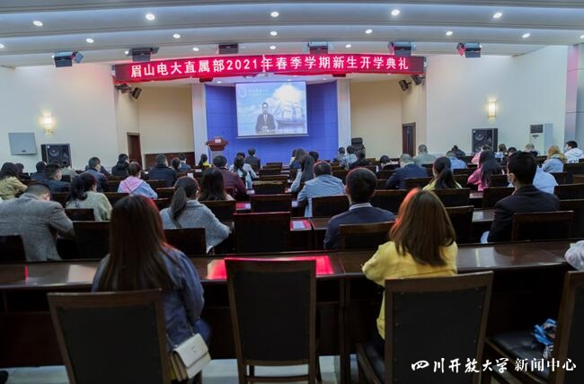
图4：开学典礼现场
开学典礼在庄严的奏唱国歌声中拉开帷幕。全体师生集中观看了泰州市广播电视大学党委副书记、校长杨俊辉所发表的新生致辞。
2019秋法学本科的王忠军同学代表老生做发言，全面介绍了在校期间学习进步的体会和经验。2021春金融学本科寇希春同学代表新生做发言，认真介绍了进入电大学习的认识和打算。直属部的刘欣老师向广大新同学系统讲解了国家开放大学入学指南的相关规定和要求。教学处处长谌仲清同志代表全体教师作了电大新学员学习动员讲话，勉励各位同学做好工学安排，制定好学习计划，在接下来两年半的学习过程中能够获取更多的知识和技能。
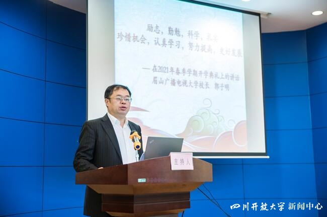
图5：郭子明发表讲话
最后，眉山电大郭子明作了题为《励志、勤勉、科学、扎实，珍惜机会、认真学习、努力提高、更好发展》的主题讲话。郭子明分析了社会改革发展对人才素质的要求，分享了古今中外励志成才的故事，阐述了“成就不在早迟，觉悟即是开始”的校训，勉励全体师生要坚定“为党育人、为国育才、为终身发展奠基”的办学目标，践行“崇德、求知、尚美、力行、渐进、有为”的学风和“爱党、爱国、自信、自强、兼容、并进”的教风，坚定进步的决心和信心，做好吃苦的准备与投入，明确电大的要求与规定，优化时间的安排与利用，认真学习，努力提高，更好进步，为国家的发展和个人的成长学好本领。（眉山电大 李宁报道）
自贡广播电视大学举行2021年春季学期新生开学典礼
近日，自贡电大直属部开放教育2021年春季学期新生开学典礼，开放教育专本科、乡村干部学历提升班学员参加开学典礼，学校全体教职工参加了典礼。
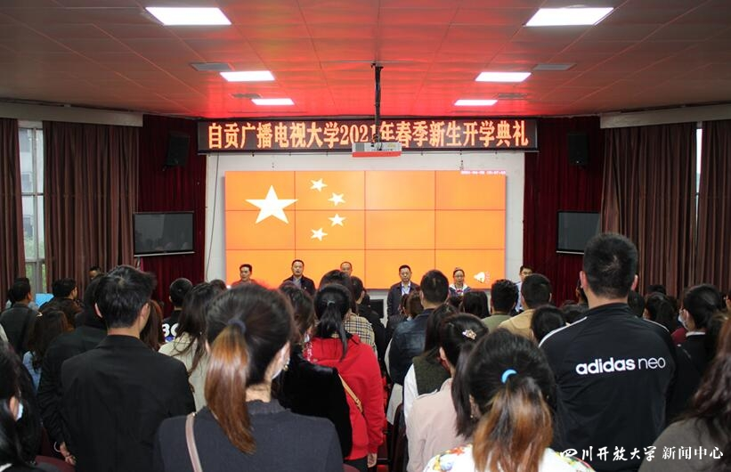
图6：开学典礼现场
会上，教师代表张婷发言，她通过一个个生动的教学案例讲述了学生成长成才的励志故事，鼓励学员电大不仅是提升学历的地方，还是你们展示才艺、突显自我价值的地方，希望各位同学能够充分的利用好电大这个平台，不负青春、不负韶华。专升本学员莫茵茵代表新生发言，她作为全职妈妈讲述了就读电大的选择和过程，自贡电大再次圆了她学习的梦想，是她人生旅途的又一个加油站，也一定会成为她人生事业的另一个起点。
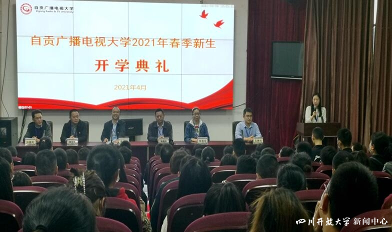
图7：开学典礼现场
自贡电大党委书记罗善海致辞，他介绍了自贡电大的发展历程和学习模式。他强调，学员入学后接下来的两年半时间，自贡电大的各位老师将和同学们成为学习共同体、互助共同体、命运共同体。老师们将以自己的师德和操守、学识和智慧、服务和奉献陪伴各位同学。他相信，这将成为老师和同学们一段美好而难忘的时光，会见证老师们在教书育人中的专业发展，见证同学们在自强不息中的奋进历程。
开学典礼后，直属部王林生老师上了国开学习指南第一课，详细介绍了国开学习模式和要求。（自贡电大 涂波报道）
广元广播电视大学举行开放教育新生开学典礼暨学位授予仪式
4月10日上午，广元电大隆重举行新生开学典礼暨国家开放大学学位授予仪式，直属部2021年春季学期200余名师生参加，广元电大校党委班子集体出席。
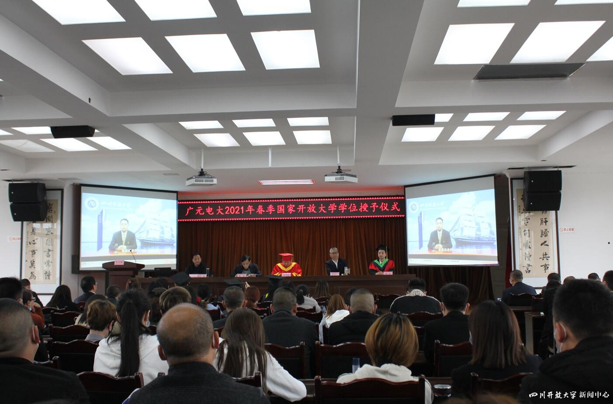
图8：开学典礼现场
典礼在国歌声中拉开序幕，泰州市广播电视大学党委副书记、校长杨俊辉通过视频短片以“扬帆新学年 逐梦新征程”为主题向新生致辞。学校向5名获得国家开放大学学士学位学生授礼并颁发学位证书。新生代表和获得学位学生代表，分享了“志于学”的心路历程，倡导同学们把握学习机会，养成学习习惯，做终身学习的践行者。
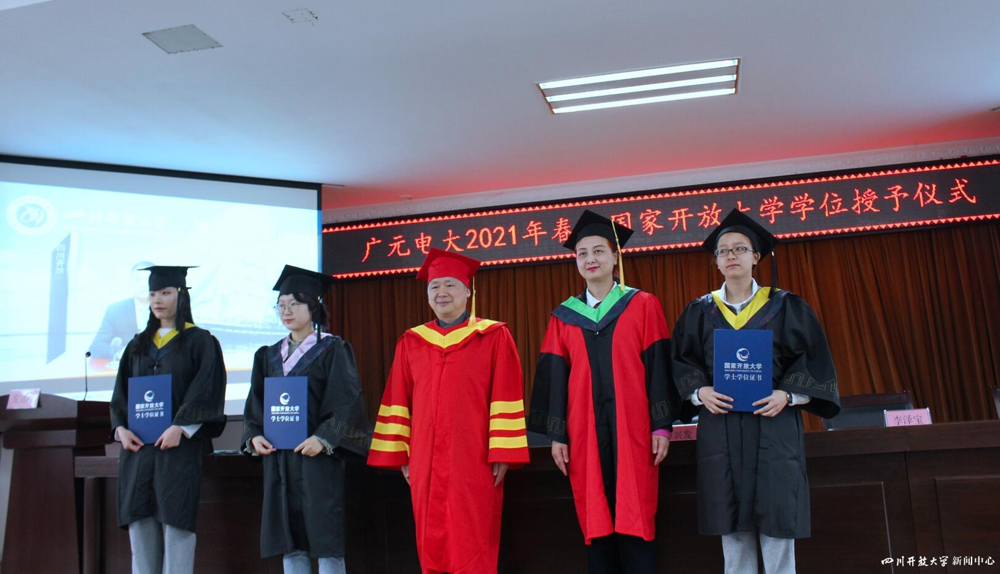
图9：授予学位
广元电大党委书记、校长罗兴发讲授思政第一课。他强调，我们坚持“为党育人，为国育才”的教育目标，要求同学们务必主动响应时代召唤，自觉对标政治要求，增强“四个意识”，坚定“四个自信”，做到“两个维护”。他勉励同学们，开拓视野、志存高远，热爱学校、团结同学，博学广才、乐学善学。希望大家通过在电大的学习，拥抱幸福人生，成就美好未来。(广元电大 杜慧 、徐德双报道)
宜宾广播电视大学举行2021年春季学期新生开学典礼
4月9日，宜宾电大在教学楼3号楼会堂举行了2021年春季学期新生开学典礼。学校领导出席了开学典礼，泰州市广播电视大学党委副书记、校长杨俊辉远程致辞新生。
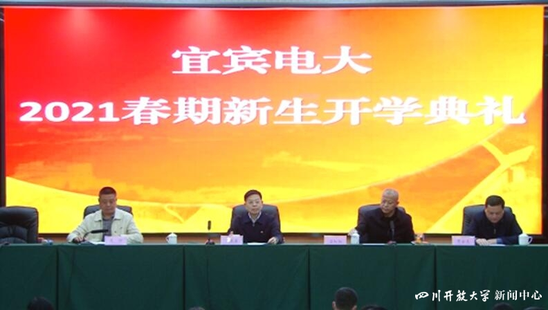
图10：开学典礼现场
开学典礼上，全体师生起立齐唱国歌。副校长吕红阳介绍了新生入学和学校办学情况。
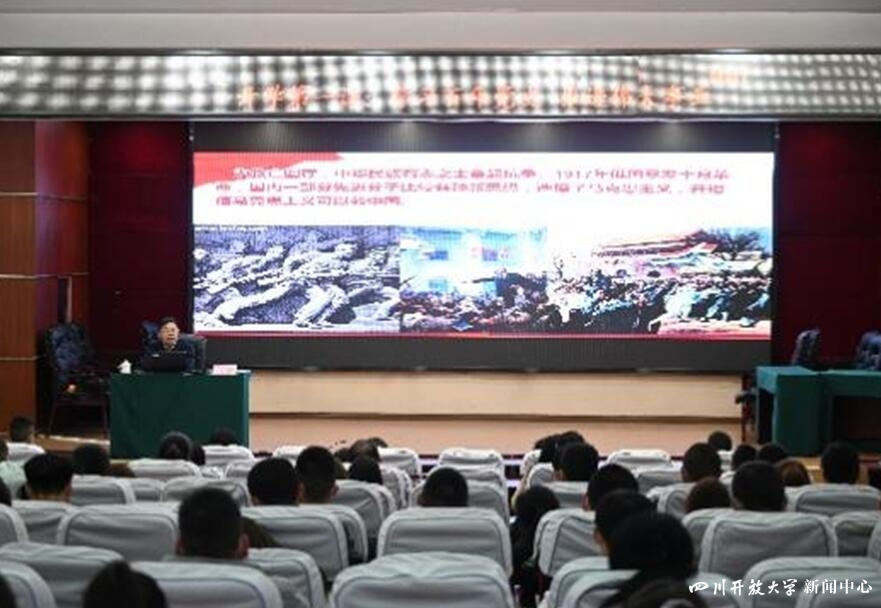
图11：专题讲座
学校党委书记、校长兰亚宾作了题为《学习百年党史，推进伟大事业》的开学第一课专题讲座，重温我党领导人民从“站起来”、“富起来”再到“强起来”的光辉奋斗历程。兰亚宾代表学校党委领导班子希望师生能加强党史学习，增强党的意识，更加坚定自觉地为党的事业而奋斗，把个人发展融入实现中华民族伟大复兴的中国梦中，为建设社会主义现代化强国不懈奋斗。
开学典礼后，各班班主任分班级召开班会，介绍开放教育的学习方式，让学员尽快适应电大教育教学和管理。班主任还在班会上开展了森林草原防灭火、防震减灾专题教育和国家安全宣传教育活动，提高同学们临危避险能力和国家安全意识。（宜宾电大 刘炳言报道）
欢迎关注电大小微